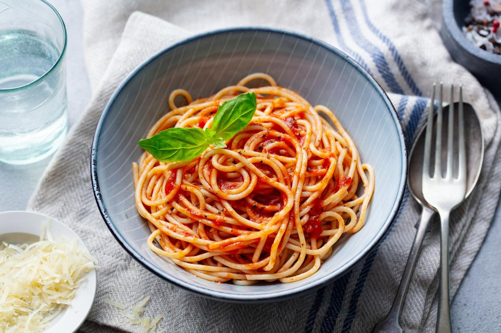

Pasta Napoli

Description
Spaghetti Napoli is one of the classics of Italian pasta cuisine.
This pasta variant is super easy to prepare in a short time and tastes good for the whole family.
Some people know this dish simply by the term “pasta with tomato sauce”, but of course,
fans of Italian cuisine would never call this dish that.
Ingredients
- 200g pasta of your choice
- 1 onion
- 1 tablespoon olive oil
- 250g tomato strained or chopped up
- 1 tablespoon of sugar
- salt, paper, basil
- parmesan chees as desired
Instructions
- Cook the pasta in salted water until al dente.
- Meanwhile saute a diced onion in a little olve oil and deglaze with tomatoes. Stir in a little sugar and season with salt and pepper.
- Let the sauce simmer over medium heat for 10 minutes and then serve with fresh basil and parmesan.
source: kitchensplace.de/en/spaghetti-napoli/